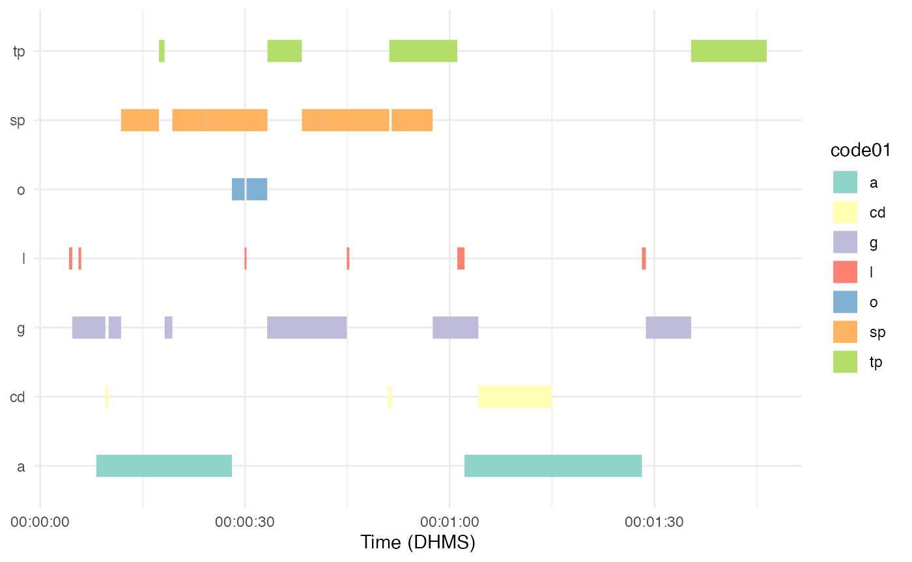
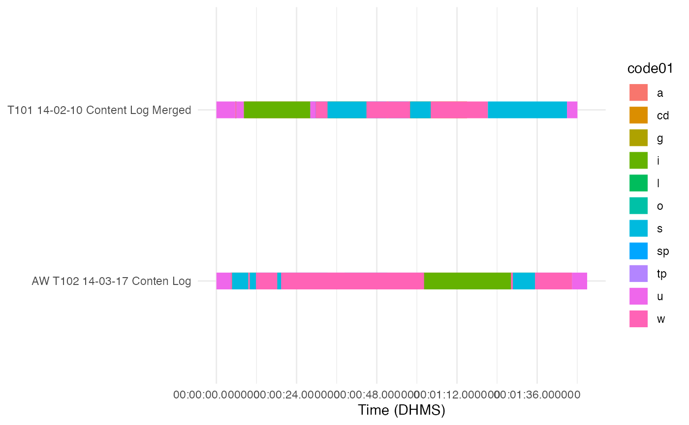
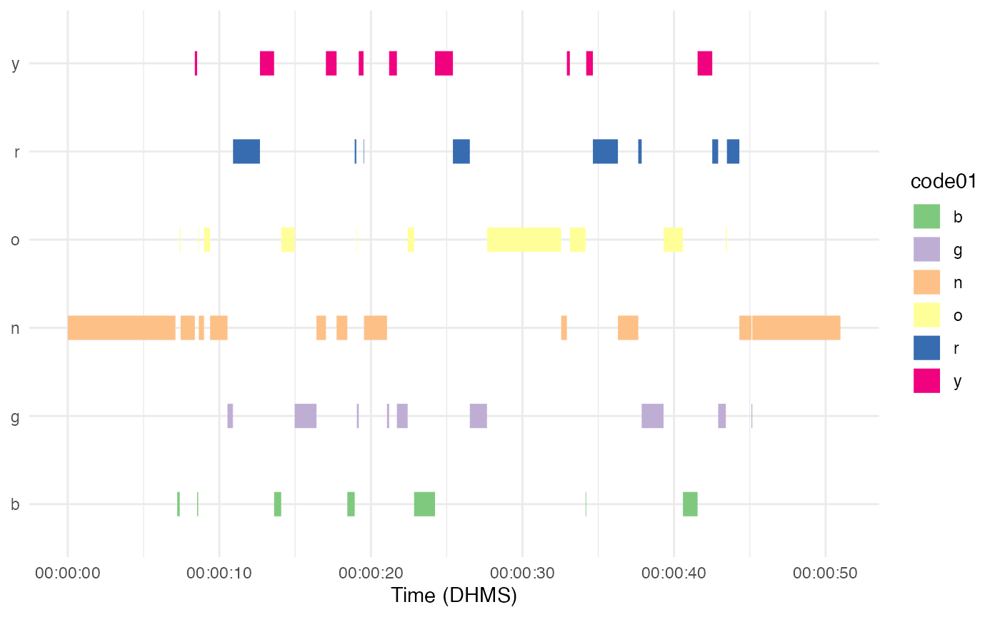
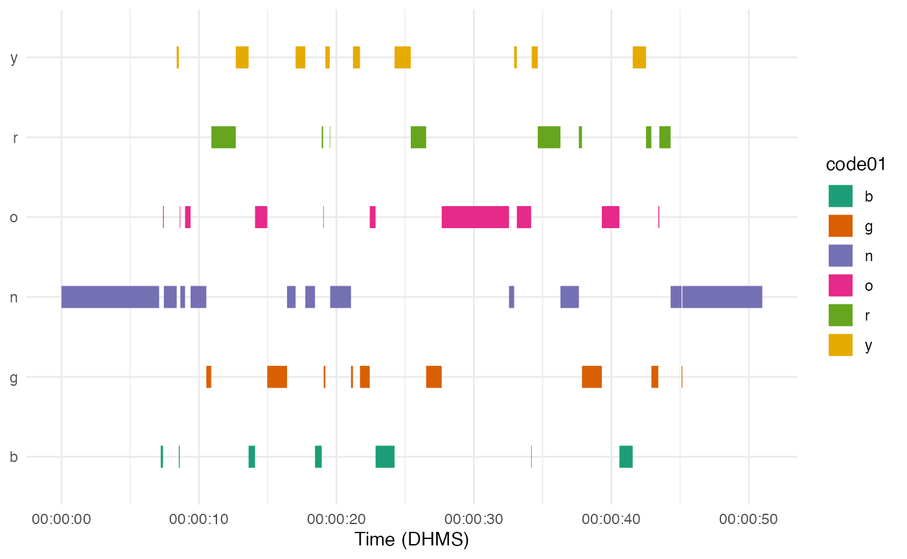
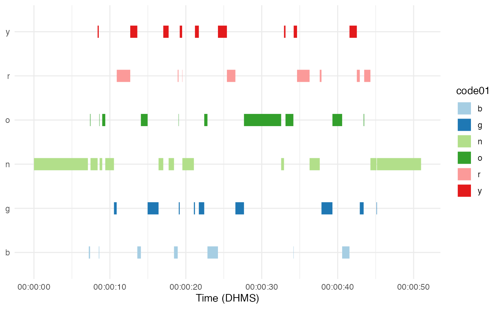
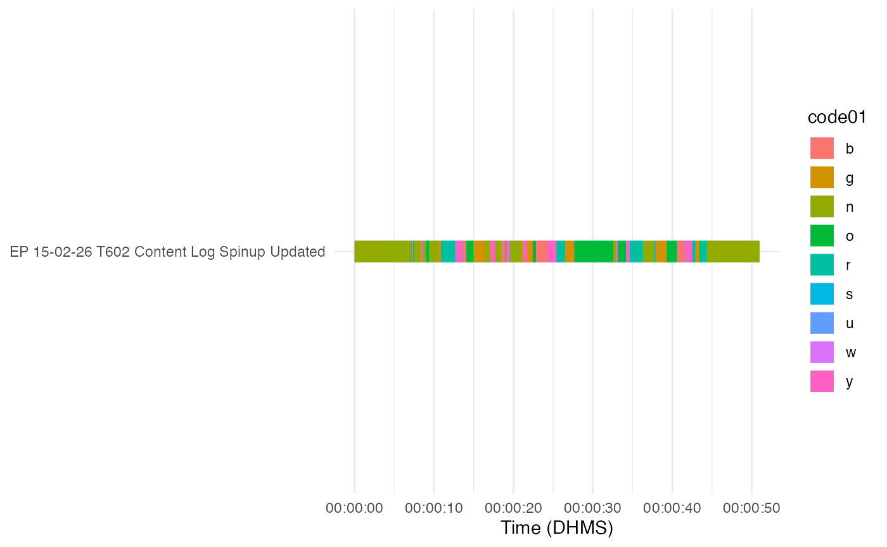
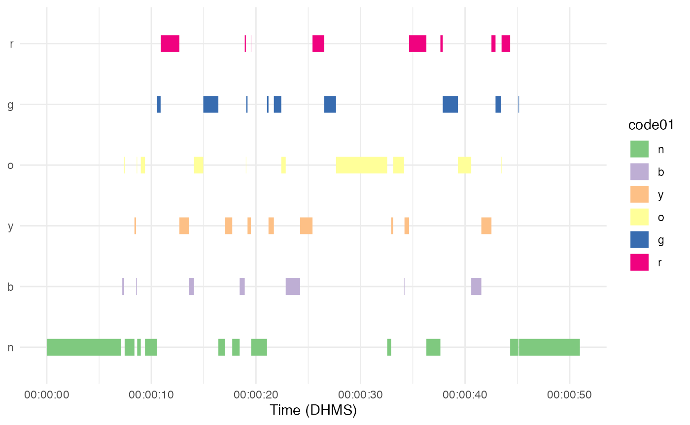
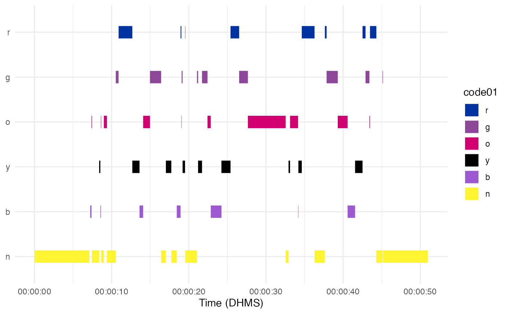

vignettes/plotting-time-series.Rmd
plotting-time-series.RmdThe plot_time_series function allows for plotting of time series data in the form of time series data .csv files accessed via datavyur::import_datavyu.
The default plot using 1 column puts each code on a separate line:
library(ggplot2)
library(birdseyevyu)
library(here)
plot_time_series(directory = here("inst", "extdata", "2021-03-28-ex", "datavyu_output"), columns = "LogClass_AS_ActivityFormat", colors = "Set3")
When using more than 1 column, each column is on a separate line:
plot_time_series(directory = here("inst", "extdata", "2021-03-28-ex", "datavyu_output"), columns = c("LogClass_AS_ActivityFormat", "LogClass_AS_ParticipationFormat"), colors = "Set3")
You can select one of the preexisting palettes that are part of scale_color_brewer(), using the colors argument and the number or name of these palettes.
plot_time_series(directory = here("inst", "extdata", "data", "datavyu_output"), columns = "LogClass_IG")
plot_time_series(directory = here("inst", "extdata", "data", "datavyu_output"), columns = "LogClass_IG", colors = 2)
plot_time_series(directory = here("inst", "extdata", "data", "datavyu_output"), columns = "LogClass_IG", colors = 3)
This only works if there are 8 or less codes to be plotted. If there are 9 or more codes, the function defaults back to scale_color_discrete(), which picks evenly spaced colors from the color wheel.
plot_time_series(directory = here("inst", "extdata", "data", "datavyu_output"), columns = c("LogClass_IG", "LogClass_AS_ParticipationFormat"), colors = 2)
You can now put the codes in a different order by specifying a character vector with the order you want using the cat_order argument.
order <- c("n" , "b" , "y", "o" , "g" , "r")
plot_time_series(directory = here("inst", "extdata", "data", "datavyu_output"), columns = "LogClass_IG", cat_order = order)
You can also pick colors completely manually by providing the hex codes for whatever colors you want using the color_scale argument. Doing this will also order the codes from top to bottom using the order provided, as with the cat_order argument.
colors <- c("n" = "#FFF430", "b" = "#9C59D1", "y" = "#000000", "o" = "#D00070",
"g" = "#8C4799", "r" = "#0032A0")
plot_time_series(directory = here("inst", "extdata", "data", "datavyu_output"), columns = "LogClass_IG", color_scale = colors)